«Мама точно приняла таблетки?»
Звонки и сообщения не всегда дают ясную картину.
«Аптечка» помогает семье следить за выполнением назначений врача: превращает документ в понятный план приёма, объединяет близких и помощников и показывает, какие приёмы ещё не подтверждены.
Тестирование бесплатно · Покажем сервис и ответим на вопросы
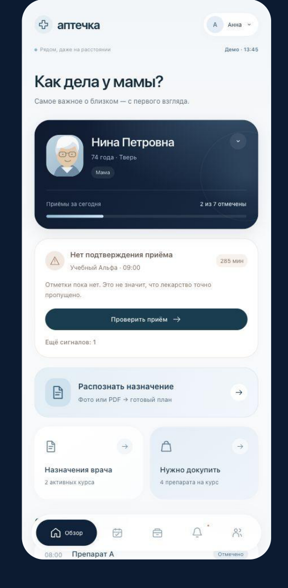
Когда близкий человек живёт отдельно, даже привычный приём лекарств превращается в десятки вопросов.
Звонки и сообщения не всегда дают ясную картину.
Фото назначения осталось в одном чате, расписание — в другом.
Несколько помощников, но нет единой истории событий.
О нехватке препарата иногда узнают слишком поздно.
Забота не должна зависеть только от памяти, переписки и бесконечных уточнений.
«Аптечка» помогает организовать повседневный уход: от назначения врача до отметок о выполнении плана и проверки домашнего запаса лекарств.
Узнать о тестировании ↗Загрузите назначение, проверьте распознанные данные и сформируйте расписание по указаниям врача.
Родственники и помощники ориентируются на согласованный план лечения.
Видно, какие приёмы отмечены, а какие пока остались без подтверждения.
Сверяйте лекарства по форме, дозировке и количеству, чтобы вовремя заметить нехватку.
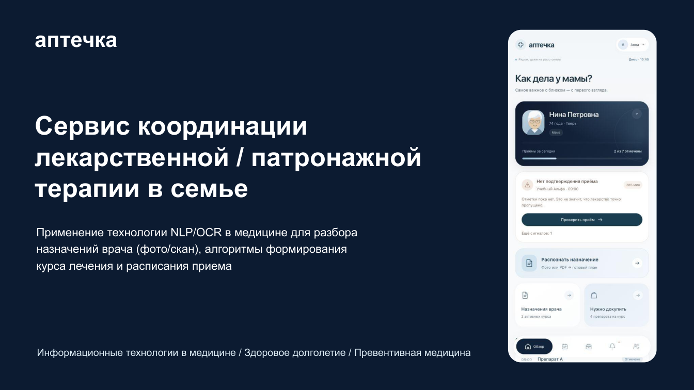
Распознавание извлекает данные из документа, а обязательная проверка человеком сохраняет контроль над итоговым планом.
Расписание и статусы помогают понять, что уже отмечено, а что нужно уточнить.
Пациенту, родственникам и сиделке нужны разные экраны и задачи. Сервис строится вокруг этих ролей.
План курса связан с домашней аптечкой: можно заранее увидеть дефицит препаратов.
Отметки и журнал событий помогают восстановить ход лечения и подготовиться к разговору с врачом.
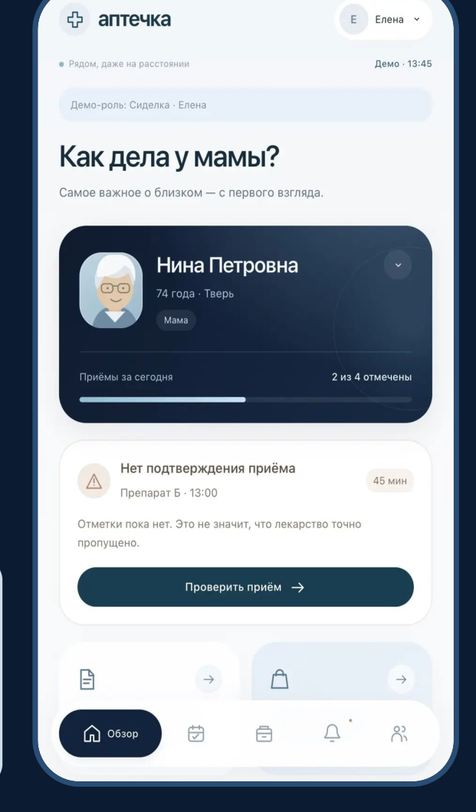
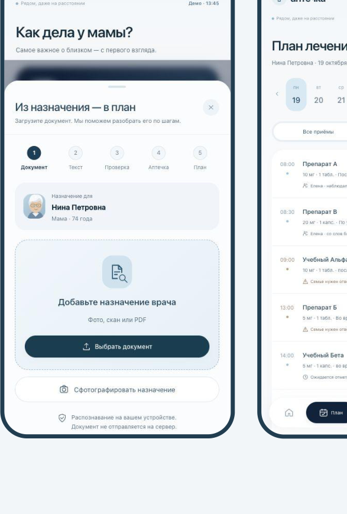
Сфотографируйте документ или загрузите скан/PDF.
Сверьте название, форму, дозировку, частоту и длительность с оригиналом. Сервис не должен додумывать назначения.
Уточните расписание, проверьте наличие препаратов и выберите участников ухода.
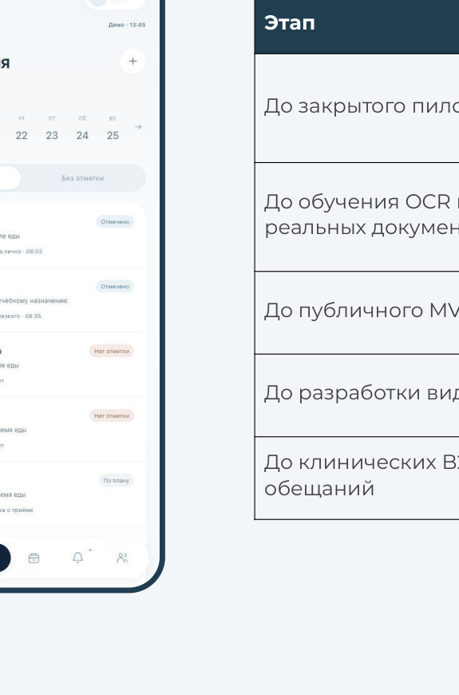
Пациент и помощники фиксируют события, а родственник видит статусы и вопросы, требующие внимания.
«Я вижу, что мне нужно принять сегодня»
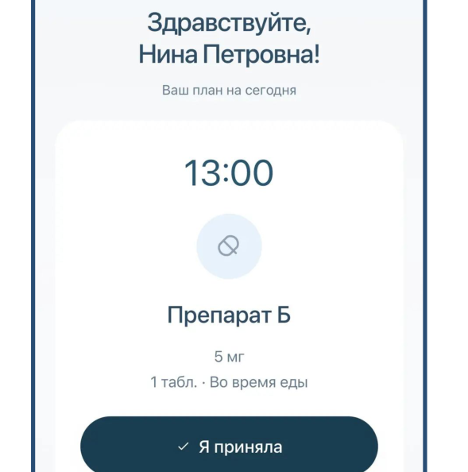
«Я вижу план и понимаю, что нужно проверить»
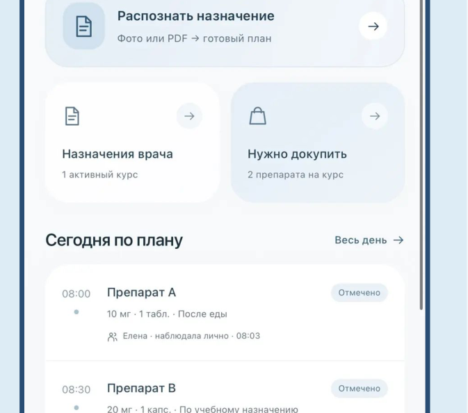
«Я знаю, что необходимо сделать и что отметить»
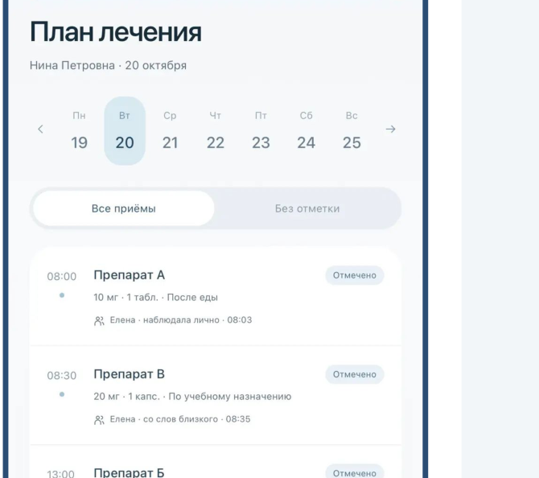
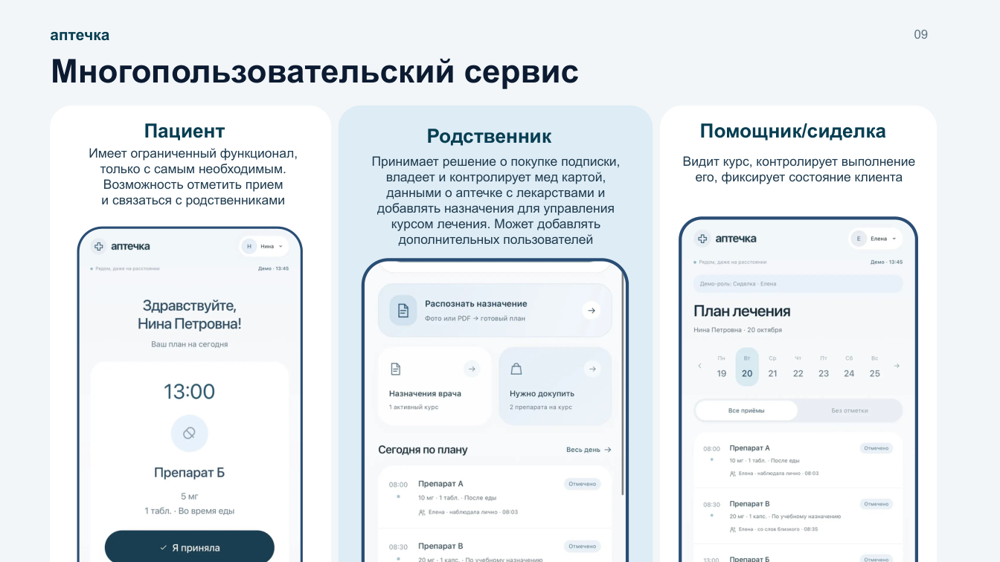
Не нужно собирать общую картину по разным сообщениям — участники ориентируются на согласованный план.
Мы соединяем распознавание медицинских документов, правила формирования курса лечения, семейные роли и учёт препаратов. Технологии снимают рутинную нагрузку, а решения о лечении остаются за человеком и врачом.
Извлечение данных из документа с проверкой перед запуском плана.
Дозировки, время и длительность собираются в проверенный сценарий ухода.
Ролевые экраны и журнал событий вокруг общего процесса.
Сопоставление назначений с наличием, формой и дозировкой препаратов.
Следующий шаг: исследование умных устройств и видеофиксации отдельных действий. Это не возможности текущего MVP — внедрение потребует проверки безопасности, согласий и применимых правовых требований.
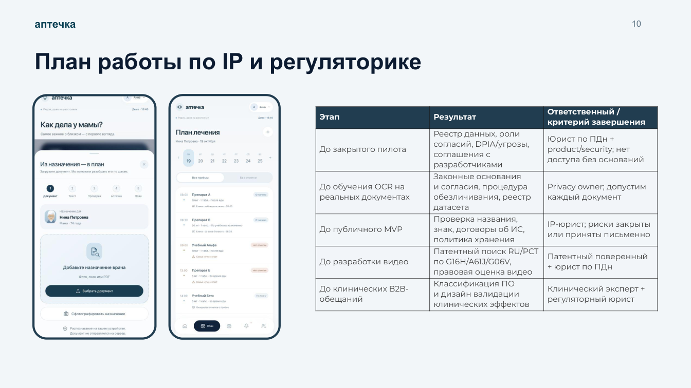
Когда за лечением следят несколько людей, важны назначение врача, единый план, история отметок и понимание, что есть дома.
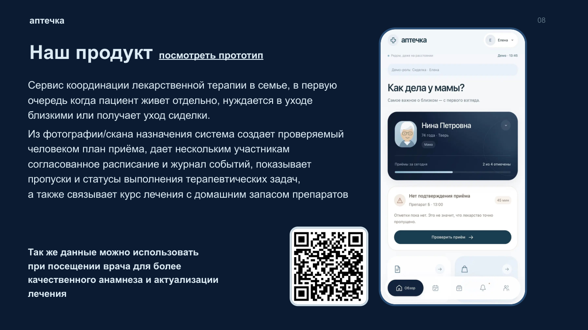
Мы приглашаем семьи, которым важно организовать лечение и уход за близкими. Покажем текущие возможности, обсудим ваш сценарий и соберём обратную связь.
Участие согласуется с командой. Возможности и доступность тестирования уточняются при обращении.
Если не нашли ответ — расскажите о своей ситуации, и мы обсудим её на консультации.
Именно для таких семей мы в первую очередь разрабатываем «Аптечку». Возможности дистанционного доступа зависят от режима тестирования.
Нет. «Аптечка» не назначает и не изменяет лечение. Перед запуском плана пользователь проверяет распознанное назначение врача.
Предусмотрены разные роли пациента, родственника и помощника. В демонстрационном режиме можно посмотреть интерфейсы; реальная синхронизация требует серверного режима.
Нет. Отметка пользователя — это запись о действии, но не объективное доказательство приёма. Отсутствие отметки — повод уточнить ситуацию.
Не со всеми. Прототип рассчитан прежде всего на простые печатные назначения с ежедневным приёмом. Сложные схемы и рукописный текст требуют дополнительной проверки.
На текущем этапе знакомство и тестирование полностью бесплатны. Коммерческие тарифы не утверждены.
Для публичного демо используйте обезличенные документы. Демоверсия не предназначена для защищённого медицинского хранения. Условия закрытого тестирования уточняйте отдельно.
Нет. Решения о назначении, дозировке, изменении и отмене препаратов принимает врач.
Расскажите, как организован уход в вашей семье. Мы покажем «Аптечку», ответим на вопросы и обсудим возможность бесплатного тестирования.
Заполните короткую форму. Мы подготовим сообщение для отправки команде в Telegram.